Bellow user guide shows how to create Integration Framework (IF) events and flows in order to package them in a T24 development environment.
Events
What is an Event
- A generic term for the notification which T24 emits when a business event occurs. Example: The Events are generated when a transaction happens and for that transaction an Integration Flow is attached.
- From the transaction and associated applications, the data enrichments are built as defined in the Flow and an XML representation of the Event is generated.
- This XML is confirmed to the schema representation (XSD) of the Flow and stored in a T24 events table called IF.EVENTS.INTERFACE.TABLE.
Bellow steps will show how to create Integration Framework (IF) events in order to package them in a T24 development environment.
What are the Benefits of Events
- Events enable messages generated by an application to be managed following a publish model.
- When events are generated, they are passed through system as XML files and registered event listeners receive the event information as XML.
- Each application view uses an XML schema as metadata to describe the XML data for events.
- This metadata enables the users to understand the data requirements of any application view event or service.
Preparing Integration Project
- In a workspace created in your Design Studio, set-up Integration Studio Perspective:
- On top menu bar, go to Window > Perspective > Open Perspective > Other
- From the list, click on Integration Studio > OK
- In order to create a new T24 Integration Project go to File > New > T24 Integration Project:
- Choose a name for your project
- Check 'Enable project specific settings'
- Choose Connection Method as Web Service
- Insert IF Service URL: http://localhost:9089/axis2/ (replace 'localhost:9089' with your sandbox address or use your localhost, then '/axis2/')
- Insert valid T24 User Name
- Insert valid Password for the above T24 user
- The connection with T24 server is validated.
- Result: You are now connected to T24 and will be able to create events and flows.
How to Create Events
- To create a new event, right click the events folder under the Integration Studio project.
- Specify the name of the event. Ensure that the event name has .event extension.
- Select 'Events' folder under Integration Studio project (called Sample) created before.
- Then choose New > T24 Event Wizard
- And set a file name
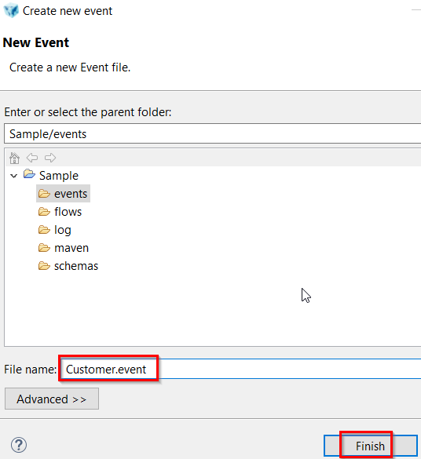
- When setting the file name, do not change the extension ‘.event’
With a T24 Connection available, Integration Designer retrieves the T24 data like: Version, Application, Exit Points, Application Fields etc, and populates the relevant drop down boxes.
- RESULT: New event created and exit point updated. Exit point is when an T24 event is emitted and triggered.
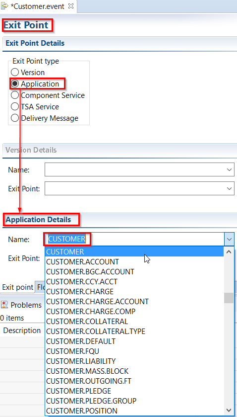
- Define the exit point in the new event. Exit point can be an input or authorization routine of a Version, an Application, or Component Service operation. A new option TSA.SERVICE is also added to define events for CoB or Service. Currently, the exit point is to inform at which stage the event will be triggered. On selecting the exit point type, the respective section is enabled, such that the exit point and the application/version name can be specified.
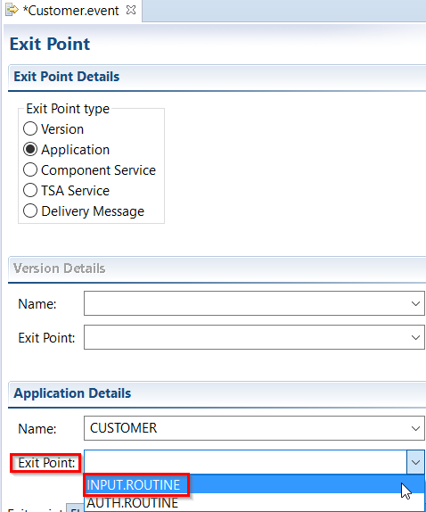
(INPUT.ROUTINE is selected because we want to see the event data when user inputs something).
- Save the exit point: CTRL + S
Create Overrides
Overrides can be specified using the Overrides tab. This helps in implementing DISPO.PROCESSING, such that a particular user can authorize the record. Only Overrides with DISPO.PROCESSING set to FORCE are available. Overrides tab is enabled only for INPUT.ROUTINE exit point, as override is inappropriate during Authorized stage.
Note
Override option is supported only for INPUT.ROUTINE type of exit point for Version and Application.
Example:
- Go to Customer.event tab screen
- Select Overrides
- Add overrides:
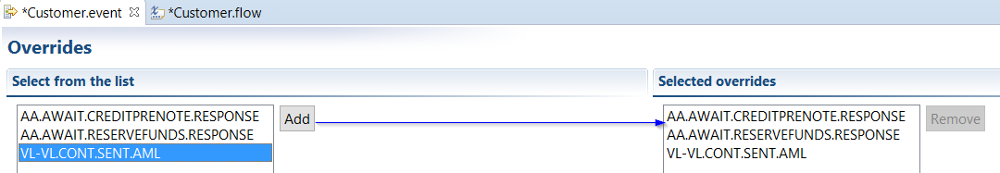
- To save the event changes press CTRL + S.
Flows
What is a Flow
- A flow defines the layout of an XML message which will leave T24 when a business event occurs.
What are the Benefits of Flows
- The flow is referenced at run-time in order for an enriched message to be constructed and dispatched.
(The Run-Time Engine -RTE = system platform, database, and language independent, which provides maximum flexibility with its multi-presentation engine. It supports the development of applications that serve thousands of users simultaneously).
Define or Create a Flow
- Under Customer.event, click Flow tab
- Enter the flow name (Customer)
- Click update the Event fields to be added and select the overrides.
- Click 'Edit' button to launch the Flow editor.
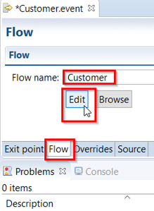
- In the next screen, select from 'Field' all the strings required (of interest).
- Double click a selection of fields (top right) to add them to the Flow Enrichments as in the picture below.
- Application should already be set to CUSTOMER (if not, select it now) and the Field control prefilled with all fields available from this application (as available in the connected T24 instance).
(Include for example some name and address fields)
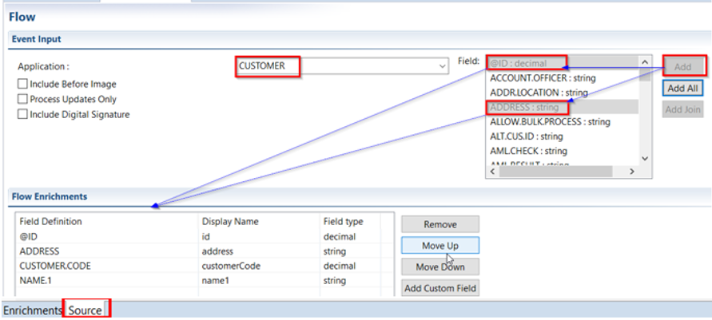
Additional information:
- Fields selected may be reordered or removed.
- Field control is prefilled with all fields available from this application (as available in the connected T24 instance).
- Attach only valid flows to the integrator. For example, attaching a FundsTransfer flow to a Teller version will result in a publish error, as the fields in FundsTransfer are not available in Teller.
- On Customer.flow tab, check below Source, where you can view the ‘source code’ for the exit point and data flow definitions in the respective source tabs. Both (.event and .flow) are xml and can be integrated to a source control system and versioned.
- The option Event Priority is introduced to set the priority for event delivery of the event type that is under design when using integration service. The default priority is 0 and can be edited to a positive integer. This value gets stored in the EVENT.PRIORITY field of IF.INTEGRATION.FLOW.CATALOG application.
- The Include before image option adds the existing transaction data to the generated event.
- The Process updates only option includes only the changed field value for the current transaction to the event and ignores all other fields while generating the event.
- The Include Digital Signature option publishes the flow with a new attribute “Include Digital Signature” to the flow. This enables the event messages to be digitally signed. The implementation for digitally signing the message need to be implemented by the user and the details are available in the Inbound Security Service User Guide.
- The Display Name column in the Flow Enrichments section is an editable column. Once a T24 field is added to the schema, this column allows to specify a different name to the field only in the flow to make the names more meaningful. This does not change the field name in the underlying application.
Note
The options “Include Before Image” and “Process Updates Only” are applicable only for Application, Version and TSA.SERVICE exit points.
Flow Wizard Join (Optional)
It is possible to add join field in the flow. A join field is a field that is used to retrieve the related information. To build a join field:
Example:
• Select the field through which the join has to be defined. (Here 'ACCOUNT.OFFICER')
• Click on 'Add Join' button and a popup window as shown below appears.
• Supply an XML-friendly Display Name (Here 'AccountOfficerName')
• Select the application from 'Application' drop down box from which the join retrieves the data. (Here 'DEPT.ACCT.OFFICER')
• Select the field from the 'Field Name' drop down box. This is the field from where the join field gets the value. (Here 'NAME')
• Click 'Add' button to add to the join definition.
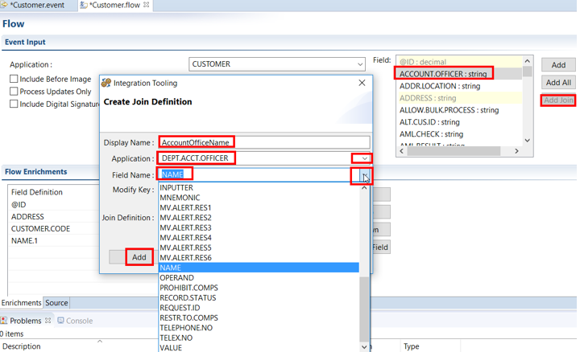
You can see Join Definition: e.g. CUSTOMER>ACCOUNT.OFFICER>DEPT.ACCT.OFFICER>NAME
Repeat step 3-6 till the join field is completed in the 'Join Definition' field.
Click Finish
Observe the new Flow Enrichment:
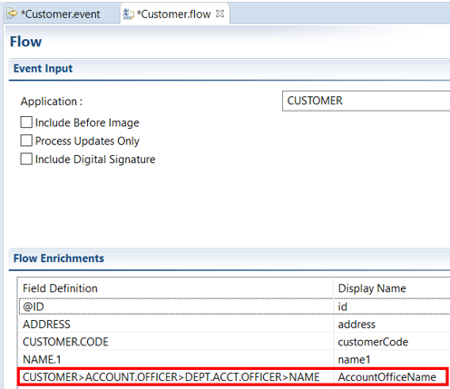
- Save all the changes: CTRL + S
Create Package
Learn how to create a package with Design Studio by following below steps.
Before generating the package, first you need to verify that the created events and flows are successfully installed in T24 area by publishing the events and flows.
Publish Project
Right click on the name of the project, then select Integration Studio > Publish
In the Console screen, status appears as 'Successfully Published':
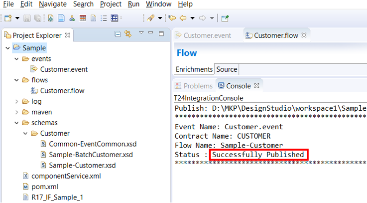
- You have now successfully generated events and flows in Design Studio.
Verify publication to T24
When the Event Designer project is published successfully to T24, the following applications are updated:
IF.EXIT.POINTS: which holds records that binds the notification exit points with their integration flows.
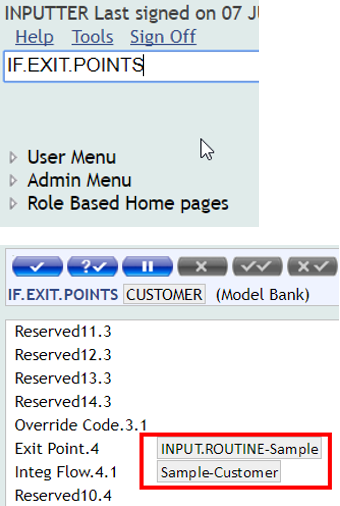
- IF.INTEGRATION.FLOW.CATALOG: This is a catalog for the Integration Flow records. Integration Flows are created from SOA Studio to be stored in this table at design time. These flows are attached to Exit Points where the notifications are sent out from T24. The flow schema thus created will be stored in the FLOW.SCHEMA field of IF.INTEGRATION.FLOW.CATALOG table.
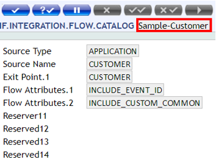
Example: To see how to create or modify a customer record, please see Generate Events section.
Packaging the IF Events and Flows
If the above publication was successful, please follow next steps in order to generate the package:
Right click on the project > Run As > Run Configurations
Make sure you have following configurations:
- Double click on Maven Build;
- Click on Browse File System button and select the project created in your workspace for which you want to generate a package;
- Type 'clean package' in Goals area;
- Click Run.
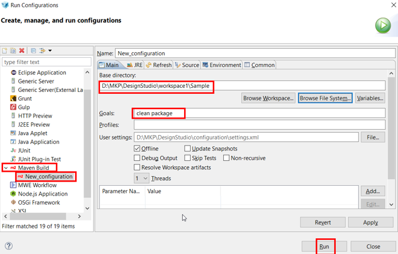
- You should receive a Build success message in the console
- And you should obtain the jar to be installed in the new environment:
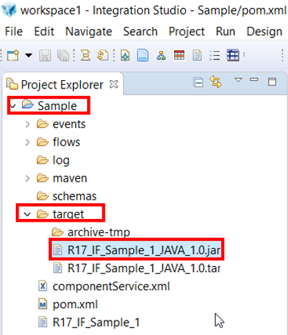
- If the maven build is successful, the artefacts (jar) are stored under the target folder (see above). The .jar file is for TAFJ implementations.
Install Package
Overview
- To deploy a set of model files, they must be packaged using the packager and installed into a T24 area using the installer.
- The packager is a DS process that builds T24 model bank into one single package that can be installed on remote T24 environment. The packager gathers from your workspace all files to assemble:
- Basic files
- Data files
- All DS generated model files Packager supports TAFJ environments, generating one .jar you can deploy.
Prerequisites
- Follow these steps in order to create package
- Install TortoiseGit
- As next step, please refer to following documentation in order to use GitLab Repository for MarketPlace Sandbox and create a Repository clone
Steps
- Trace the 'Target' folder on your local machine is the new jar’s location.
(e.g. D:\MKP\DesignStudio\workspace1\Sample\target)
- Manually copy the JAR, containing compiled basic routines, available inside the JAR from [Project-name]-packager\target folder to the packages folder.
Note
Packages folder refers to the one found in GitLab Repository folder in the environment created by cloning GitLab Repository
- Follow this user guide to learn how to deploy a T24 package to the Sandbox by using TortoiseGit commands.
Verify deployment in the browser
- Type IF.EXIT.POINTS in the command line and search for your application
- Type IF.INTEGRATION.FLOW.CATALOG in the command line and then the name of the flow created
Note
After you have validated the changes against T24 development environment, you can create and deploy the package on one or many environments.
Generate Events
To see more about what is an event and what are the benefits of it, please check this user guide.
Note
Any change of records will generate an EVENT.
Change a record to generate an event
Below example shows a few changes into a customer record:
- Login to T24 Browser and type CUSTOMER, in command line (Use comma to create an authorized record)
- Type a customer ID and press enter or edit button
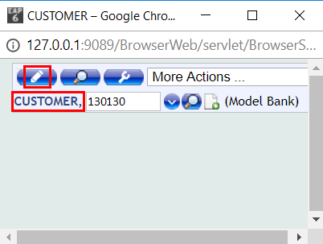
- Make some changes or add information in the fields displayed and commit the deal (validate by left corner button)
These modifications are generating an event record.
Next, check View Events section to learn how to identify them.
View Events
To see what triggers an event, please check first Generate Events section from above.
View Event Record
Any change (create/ amend) of a record can be observed as an event record in IF.EVENTS.INTERFACE.TABLE.
The event created in previous example from Generate Events section can be seen as follows:
- Type IF.EVENTS.INTERFACE.TABLE in the command line
- On the new screen, go to List Live File and press validate
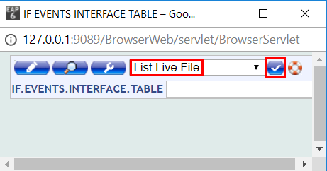
- Go to the Selection Screen button (search). Below is an example of one of the options to search the event created before:
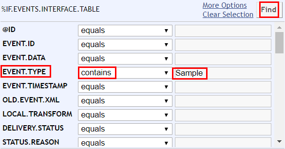
To display the event data details, click on the magnifier button:
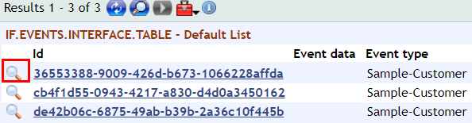
Event Delivery with Jboss
Integration Service provides the asynchronous Event delivery functionality through a store and forward interface table and a TSA Service.
The Events are generated, for example, when a transaction happens for which an Integration Flow is attached. Performing a transaction triggers an event in integration framework and this event will be consumed by JMS queue or by a middleware, eventually.
From the transaction and associated applications, the data enrichments are built as defined in the Flow and an XML representation of the Event is generated. This XML would be confirming to the schema representation of the Flow and stored in the IF.EVENTS.INTERFACE.TABLE within T24 into the EVENT.DATA field. The transaction continues and gets completed normally.
A dedicated TSA Service called INTEGRATION.SERVICE needs to be executed to deliver the events through CALLJEE method. When the event delivery happens this data will be transformed to XML value and delivered to JMS Queue.
Consuming Events
IF Event messages are delivered always in XML format. By running the INTEGRATION.SERVICE, the XML message is delivered to the application server JMS Queue by having the configurations in Parameter record and JMS queue configurations in the application server. Default parameter record containing the queue name is given below.
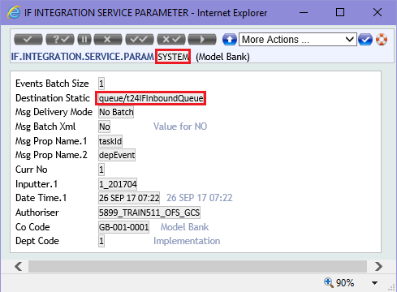
And the application server side configurations are already handled for the above default queue.
With this above configuration XML Message can be delivered to the JMS Queue, later this has to be consumed by a listener program. The custom listener program can be built in Java run in the same application server and then the message has to be translated to understandable format for the outside application that will receive them. Before consuming the event, the listener program should check for the JMS message header in order to identify if that event is indeed supposed to be consumed by it or not. For this to happen it must be set the MSG.PROP.NAME field (for example taskId) into the Parameter record and that field to be also defined into the event as a custom field (taskId equal with a value that will be used by listener to search for it into the JMS header).
Note
The MSG.PROP.NAME is a multi value field that defines the list of names to be used to create properties to set in the JMS message header. For each value in this field, a property would be added to the JMS message header with the value obtained from an equivalent field in the event record.
We need to consider the following:
- Message data can be retrieved by implementing MessageListener class and through the method onMessage(Message msg);
- Retrieved XML message can be parsed and redirected to the outside application by having supporting jar files like json-simple.jar, jdom.jar, etc.;
- Dependent jars to be mentioned in Maven dependency and Maven build can help us building the classes to a Jar file;
- Jar has to be deployed in the Application Server.
Note
Please refer to next IntegrationFrameworkEventMDB template project. This is a sample MDB for consuming events from Integration Framework Events Queue. This MDB is configured to consume messages from queue/eventQueue and will echo event XML.